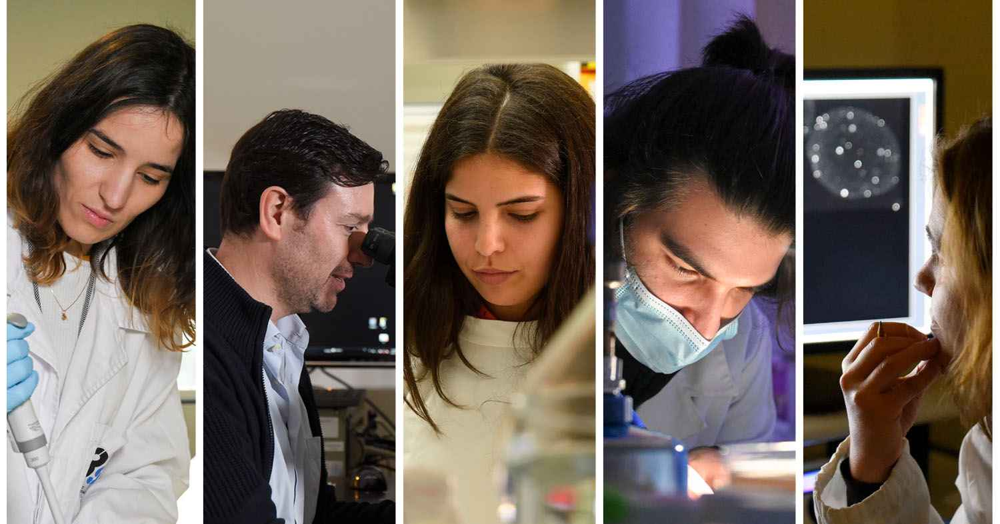

With over 100 years of history, the University of Porto is a leading teaching and scientific research institution in Portugal and worldwide.
Considered the best Portuguese University and one of the best 100 European institutions according to the most important Higher Education rankings, U.Porto combines quality teaching and excellent research with the best academic experience.
We are waiting for you!
With 48 research units and a highly qualified scientific community, the University of Porto is one of the largest producers of science in Portugal, contributing to almost 25% of all national scientific output.
The excellence of our scientific ecosystem is particularly evident in the position the University occupies in the main international rankings of Higher Education.
You have just entered in U.Porto and you feel "lost"? Do you want to do a mobility period abroad and you don't know how? You are finishing your course and don't know what is waiting for you out there? In this area, we give you the answers you need. We hope to help you!